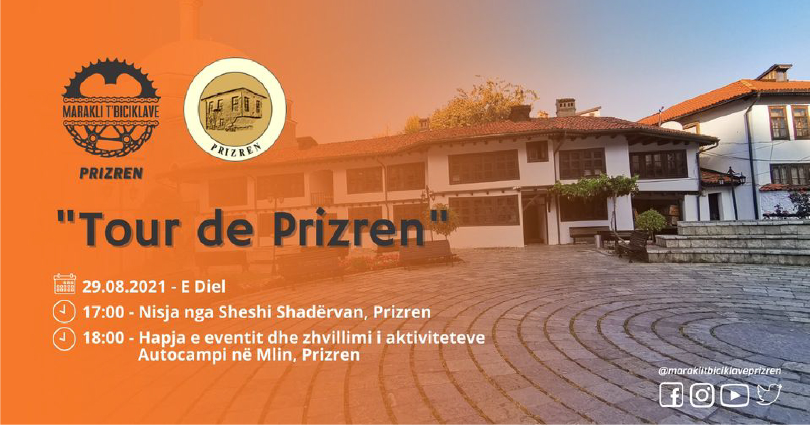
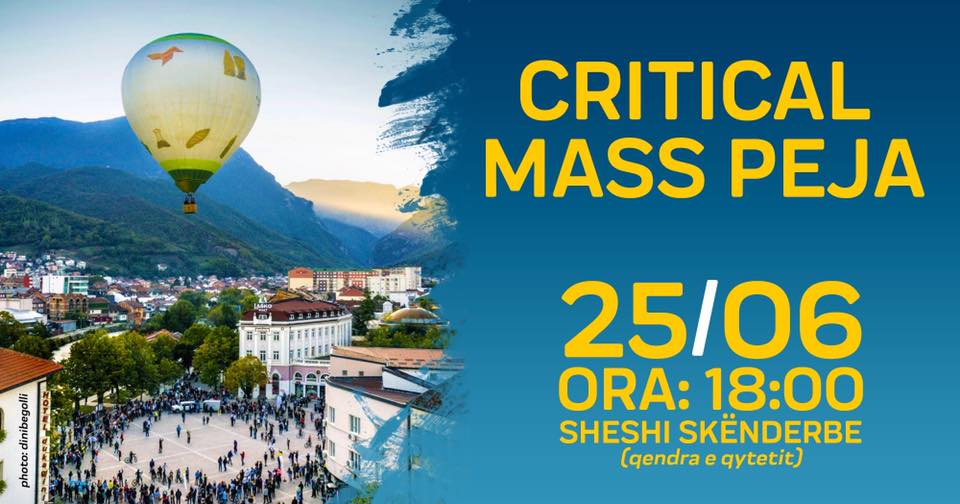

Upcoming events

28 Nentori
ORA:15:00 / DATA:28.11.2021
Hold to read more

8 marsi
ORA:15:00 / DATA:28.11.2021
Hold to read more

Batllava
ORA:15:00 / DATA:28.11.2021
Hold to read more
Past events

Tour de Prizren
ORA:15:00 / DATA:28.11.2021

Critical Mass Peja
ORA:15:00 / DATA:28.11.2021

Ujvara e Mirushes
ORA:15:00 / DATA:28.11.2021